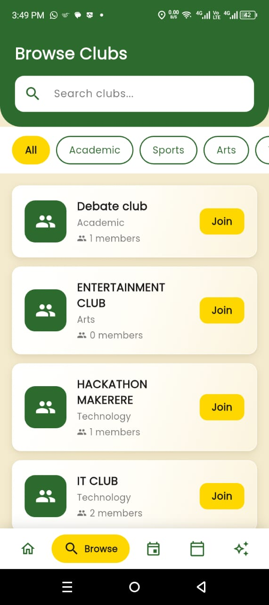
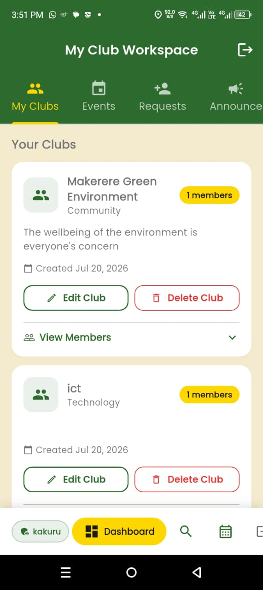
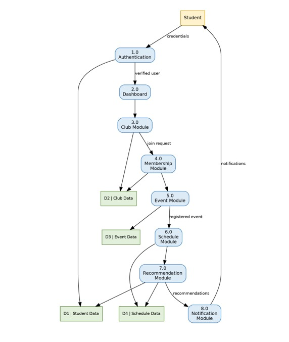
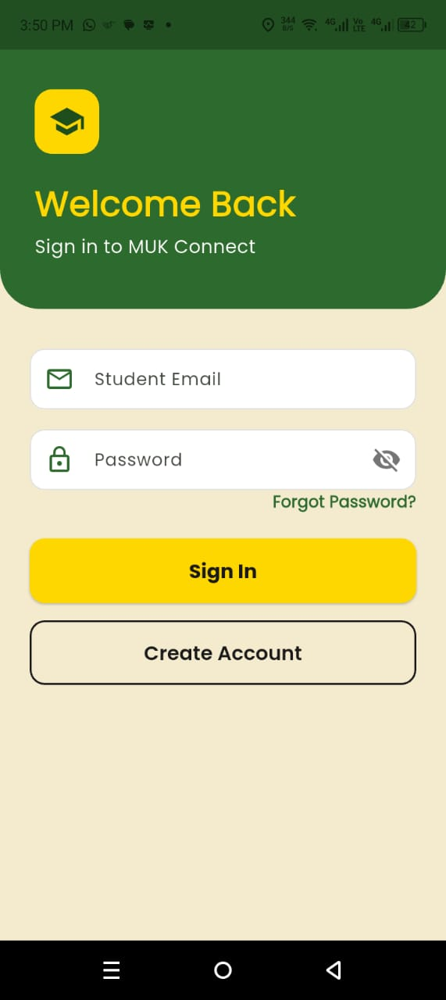

Project Details & Explanation
A centralized platform connecting Makerere University students to campus clubs, eliminating guesswork and empowering both administrators and members.
1. The Problem
Information about these clubs and their activities is scattered across notice boards, social media platforms, and messaging groups, making it difficult for many students, especially new students, to discover available opportunities.

2. Target Audience
It includes Makerere University students, who will use the platform to discover clubs and manage their schedules, and club administrators, who will manage club information, events, and membership applications.
- Student Users: Regular university students.
- Club Administrator Users: Leaders of student clubs. They manage club information, create events, and approve students.

3. Methodology & Environment
Involves developing the application using Flutter for cross-platform mobile development and Firebase for user authentication, cloud database management, and real-time notifications.
The MUK Connect app will run on:
- Android phones with version 5.0 or newer.
- iPhones with iOS version 11.0 or newer.
- Mobile phones with internet connection (WiFi or mobile data).

4. Key Functionalities
MUK Connect allows students and club leaders to do these main activities:
- Account Management: Create an account, log in, and manage profile information.
- Browse & Join Clubs: See a list of all clubs, search, and view details.
- Events & Schedules: See all club events. Create a personal study schedule and get reminders.

5. Expected Benefits
Improving access to club information, enhancing students' time management, increasing participation in campus activities, reducing scheduling conflicts, strengthening communication between students and clubs, and creating a more connected and active university community.